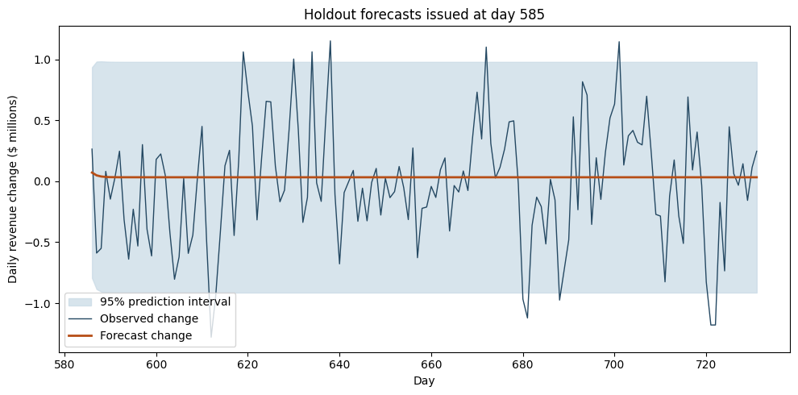
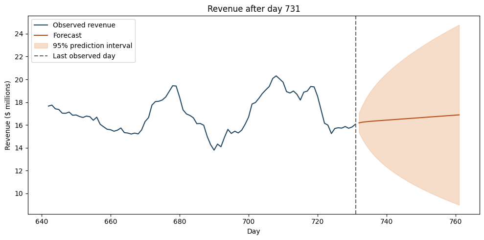

Business question
Can daily revenue history support an accurate short-term forecast for a hospital in its first two years of operation?
Approach
How the work was done
- Reviewed 731 daily observations for continuity, visualized the series, and ran an Augmented Dickey-Fuller stationarity test.
- First-differenced the series; the post-difference ADF p-value was 5.11e-30, compared with 0.1997 before differencing.
- Fit an AR(1) model to 584 daily changes. From day 585, forecast changes for days 586–731 and compare them with assuming zero change each day.
Results
What the analysis shows
- On the 146 held-out days, ARIMA had MAE of 0.3765 and RMSE of 0.4887 million dollars of daily change. The no-change forecast had MAE of 0.3746 and RMSE of 0.4860 million.
- For the 30-day projection, the notebook refits the model on all 731 revenue observations. It forecasts daily revenue levels for days 732–761 with model-based 95% prediction intervals.
From the project
Forecast error and uncertainty

The forecasts issued together
These are the 146 forecasts used for evaluation, all issued at day 585. Assuming no daily change gave slightly lower MAE and RMSE. Values are in millions of dollars.

The next 30 days
The notebook refits through day 731 before projecting revenue levels. The widening interval shows how uncertainty grows over the month.
Additional comparison
Forecasts updated each day
A separate evaluation refits ARIMA before predicting each next day, using only observations available at that point. On the same 146 test days, MAE was 0.3531 and RMSE 0.4408 million dollars of daily change, versus 0.3746 and 0.4860 for no change. The update schedule changes which method performs better.
Business relevance
What this makes easier to decide
For a forecast issued once at the training cutoff, no change performed slightly better. The additional daily-update comparison favored ARIMA. Monthly budgeting needs further tests of revenue levels and totals at several historical cutoffs.